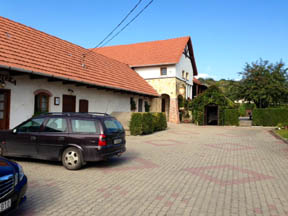

We visited two vineyards in Hungary in October. Unlike our previous visit, when we went to the southern region called Villány, on this occasion we went to the famous Tokaj region, which predominantly but by no means exclusively produces sweet wines flavored by hefty doses of botrytis cinerea. Two works are worth consulting about these wines: (1) Tokaji Wine: Fame, Fate, Tradition by Miles Lambert-Gócs, ISBN 978-1-934259-49-8; and (2) David Copp's Tokaj: A Companion for the Bibulous Traveler, ISBN 978-963-87524-3-7; both of these works are in English.
Our first visit was to the winery of Mihály Hollóköi, whose vineyard is in the commune of Tállya. He produces the full range of Tokaji Aszu wines: 3-puttonyos, 4-puttonyos, 5-puttonyos, 6-puttonyos, as well as Esszencia, and both sweet and dry Szamorodni wines. The grape of Tokaj is either the Furmint or the Hárslevelü and a smaller amount of wine is also produced from Sárga Muskotály, which is also called muscat à petits grains; and you get excellent tokaji wines from either or a combination of these. For more information, click here. His annual output is about 60,000 bottles. The cellar is immediately adjacent to the manor house and the winery has been in the family for five generations., the entrance is visible at the end of the parking area.
We then dressed warmly and proceeded to the cellar where we ended up tasting a total of 13 wines directly from the barrel: a 2011 furmint, a 2008 hárslevelü, followed by two 2006 wines, a dry szamorodni and a sweet szamorodni, with the former at 14% alcohol content, then a 2011 sárga muskotály, then a 3-puttonyos aszu from 2007 and a 6 puttonyos aszu from 1999, a muskotályos aszu from 2000,and finished with a dry muskotály from 2009. We took very small sips because Hollóköi strongly discourages spitting in the cellar, although the undrunk wine may be poured on the floor, which we did because we knew that we would also visit a second vineyard with comparable number of wines to be drunk. (Fortunately, driving was not an issue for us because we had a driver who was obviously abstaining.) The wines all tasted absolutely fabulous. The sárga muskotály had the most fruit, which was quite intense. The aszus demonstrated the usual balance of sugar and acid, which makes this wine so very special and really quite different from, say, a Trockenbeerenauslese, which tends to have less acid. It is interesting to note that the cellar dates from Turkish times— this makes them quite old because (the central part of) Hungary—in other words, most of it except for Transsylvania, the northern portion called Felvidék and the westernmost part— was reconquered from the Ottoman Empire in 1686, having been under Turkish domination since 1541. As one can see from the illustration on the right, it was difficult to tell the color of the wines with precision because the lighting was minimal, and whatever there was, was further diffused by the thick black mold on the walls of the cellar. My impression was that a tokaji wine with strong botrytis is likely to be pure furmint, because apparently the hárslevelü grape is not as easily affected by botrytis as the furmint. I wondered why there does not seem to be much or any furmint except in Hungary and was told that the furmint is a "difficult" grape.
After a delicious lunch provided by Mr. Hollóköi, we proceeded to the commune of Mád, about 4 miles from Tállya, where we visited the Szepsy Pince (Cellar) and met with István Szepsy, the owner. We had become aware of his wines a year earlier when we had dinner in Budapest in a restaurant called Onyx, arguably the best restaurant in Budapest, deserving of a Michelin star (which it does not have because Michelin does not rate restaurants in Hungary yet). What impressed us from the very first was that Szepsy was making dry furmints, and they tasted exceptional to us. They were essentially bone dry, but the fruit shone through nevertheless and after we tasted a couple last year we made it a point to visit him at the first possible opportunity. Szepsy is also relatively small operation in that it produces about 50,000 bottles a year from slopes that are south, east and west facing. Mád is an important subregion in Tokaj and American connoisseurs would recognize the names of other producers in the region such as Royal Tokaji, the wines of whicvh are fairly widely available in the U.S.
Mr. Szepsy is an extremely impressive person who spent about 3 hours with us,
tasting wines and talking about them. In Mád, as in other subregions of Tokaj, the area is divided into "dülö"-s; which might be called tracts or even vineyards; they all have names and their own soil and subclimate characteristics and he
enthusiastically agreed when I suggested that this concept might be closest to the French "terroir."
. After a brief visit to
the cellar and the winepress we sat down to a leisurely tasting which started with a number of 2011 dry furmints, namely from the Urágya dülö,
the Szt. Tamás (St. Thomas) dülö, the Betsek dülö and the Nyulászó dülö (the latter being actually a combination of furmint, hárslevelü and muskotály).
The Betsek is not available yet commercially, but will be in a few weeks; the remainder are and his wines are carried by at least one
wine store in Budapest, Bortársaság. Szepsy is a passionate winemaker and he seemed to enjoy telling us about all the ramifications of the Tokaj region. The dry furmints were awesome;
they are the ones that most differentiate the Szepsy wines from other producers. They are bone dry, with the fruit nevertheless shining through, good but never unpleasant acids, and subtle differences in fruit between the wines from one to
another dülö. We then drank two sweet szamorodnis (from 2008 and 2009), a 2006 aszu, and an 2007 6 puttonyos aszu.
We asked him how long the dry furmints are likely to last and he said that he didn't really know because he got started only in 2003; my own guess is that they will be long lived like the best of the white Burgundies.
He suggested that his wines are or will be represented in the US by
The Wine Company, St. Paul, MN and by Domaine Select Wine Estates
in New York. All in all, he impressed us with his knowledge and his passion for wine and wine making and this, too, was a most rewarding and enjoyable visit.